Power Flow
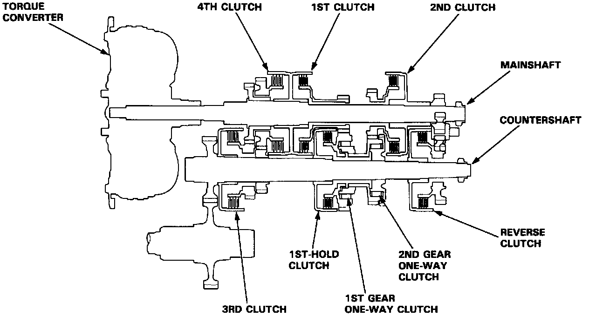
Power Flow
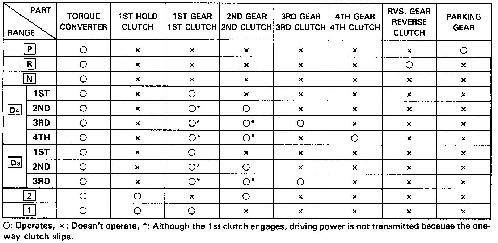
Clutch Operation in Each Gear
[N] Position
Hydraulic pressure is not applied to the clutches. Power is not transmitted to the countershaft.
[P] Position
Hydraulic pressure is not applied to the clutches. Power is not transmitted to the countershaft. The countershaft is locked by the parking paw interlocking the parking gear.
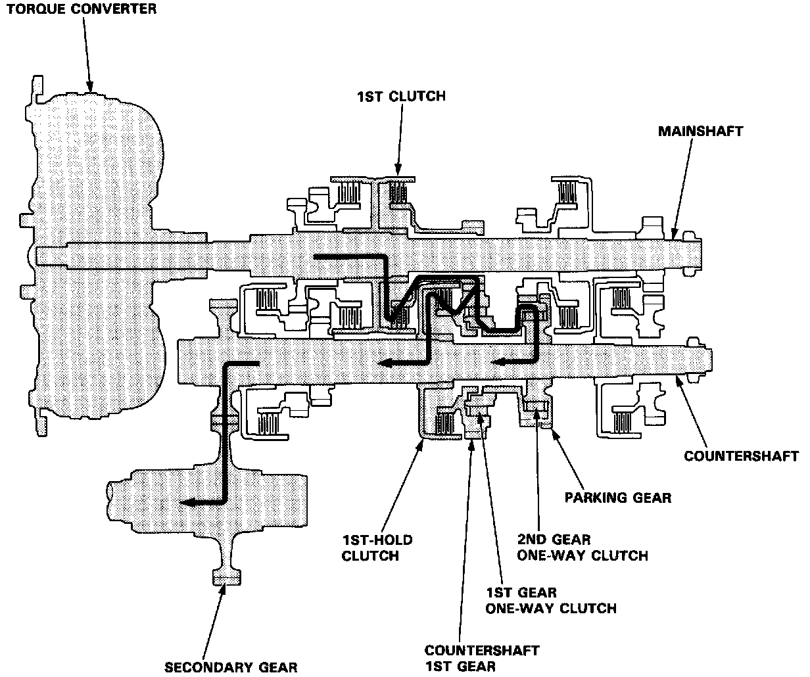
[1] Position
At [1] position, hydraulic pressure is applied to the 1st clutch and 1st-hold clutch.
The power flow when accelerating is as follows:
1. Hydraulic pressure is applied to the 1St clutch on the mainshaft and power is transmitted via the 1St clutch to the mainshaft 1st gear.
2. Hydraulic pressure is also applied to the 1st-hold clutch on the countershaft. Power transmitted to the mainshaft 1st gear is conveyed via the countershaft 1st gear to the 1st gear one-way clutch and 2nd gear one-way clutch, and the 1st-hold clutch. The one-way clutches are used to drive the countershaft, and the 1st-hold clutch drives the countershaft.
3. Power is transmitted to the secondary drive gear and drives the secondary gear.
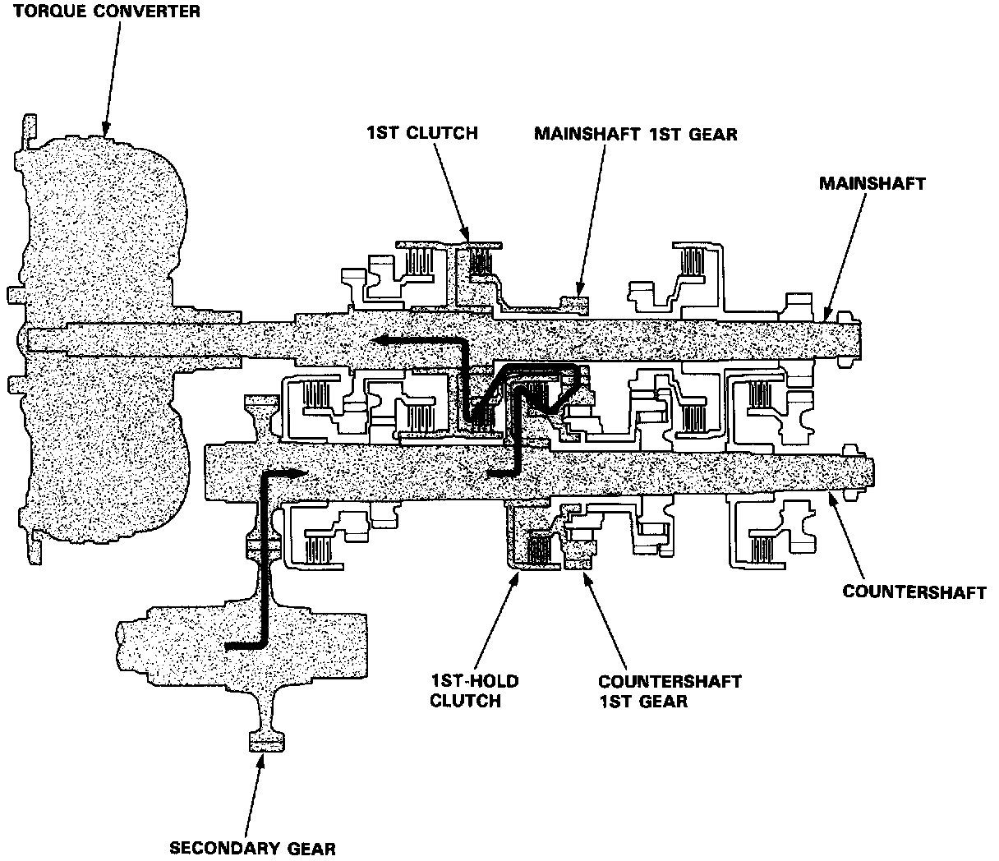
[1] Position
The power flow when decelerating is as follows:
1. Rolling resistance from the road surface goes through the front wheels to the secondary drive gear, then to the countershaft 1st gear via the 1st-hold clutch which is applied during deceleration.
2. The 1st gear one-way clutch becomes free at this time because the countershaft torque reverses.
3. The counterforce conveyed to the countershaft 1st gear turns the mainshaft 1st gear. At this time, since hydraulic pressure is also applied to the 1st clutch, counterforce is also transmitted to the mainshaft. As a result, engine braking can be obtained with 1st gear.
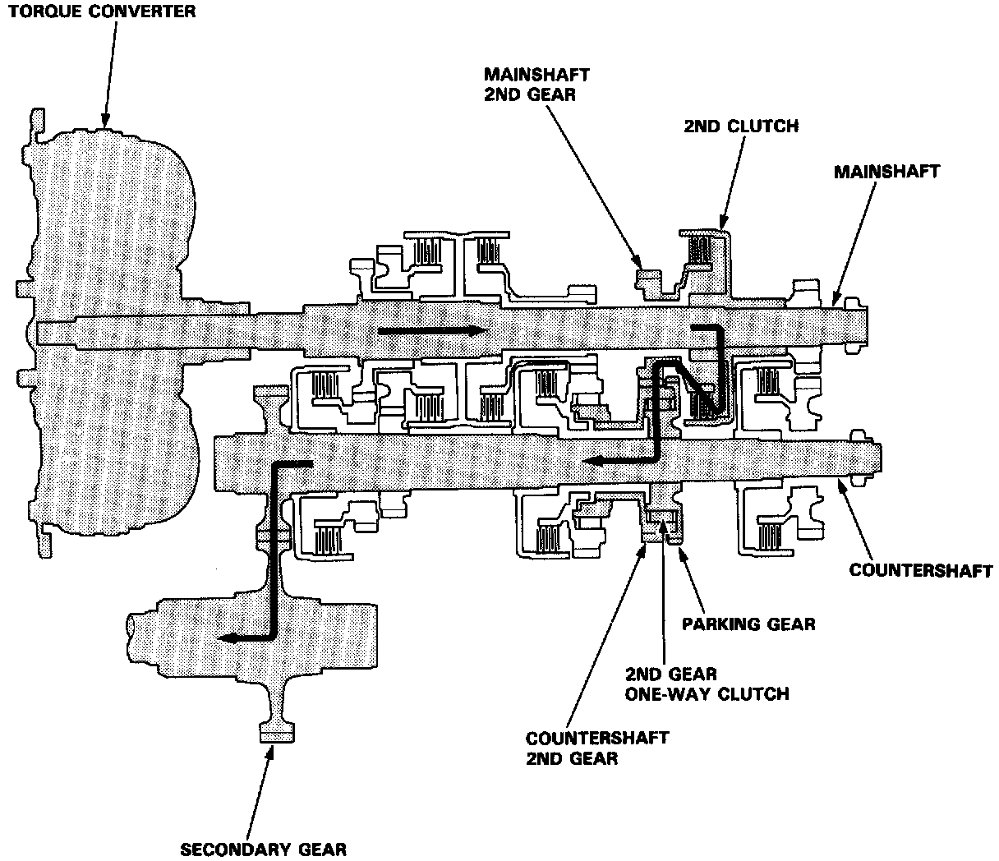
[2] Position is provided to drive only 2nd speed.
At [2] position, hydraulic pressure is applied to the 2nd clutch and to the 1st-hold clutch.
The power flow when accelerating is as follows:
1. Hydraulic pressure is applied to the 2nd clutch on the mainshaft and power is transmitted via the 2nd clutch to the mainshaft 2nd gear.
2. Power transmitted to the mainshaft 2nd gear is conveyed via the countershaft 2nd gear to the 2nd gear one-way clutch on the inside of the countershaft 2nd gear. The 2nd gear one-way clutch is used to drive the countershaft.
3. Power is transmitted to the secondary drive gear and drives the secondary gear.
Hydraulic pressure is applied to the 1st-hold clutch but the countershaft is rotated by the 1St gear one-way clutch.
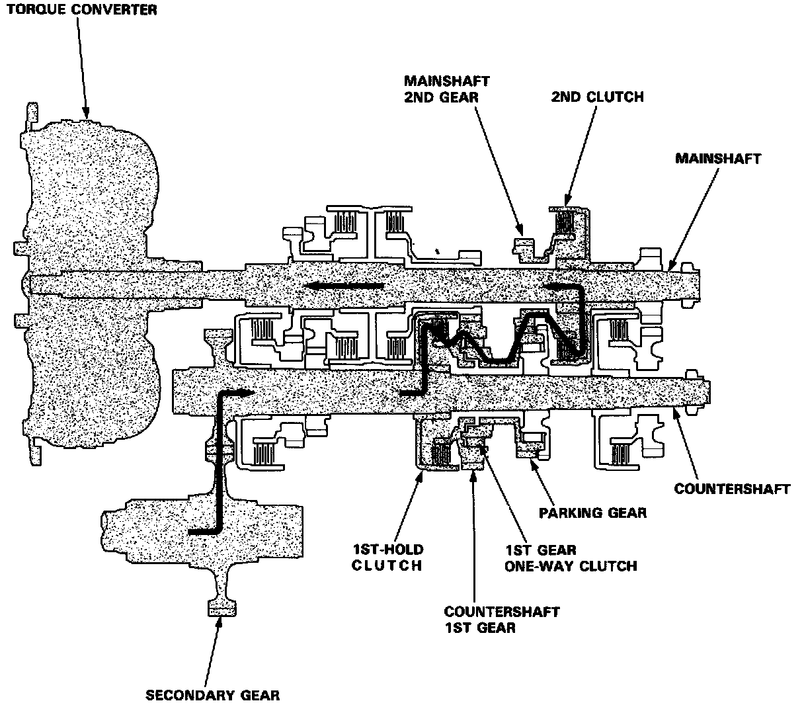
[2] Position
The power flow when decelerating is as follows:
1. Rolling resistance from the road surface goes through the front wheels to the secondary drive gear, then to the countershaft 1st gear via the 1st-hold clutch which is applied during deceleration.
2. Power transmitted to the countershaft 1st gear is conveyed via the 1st gear one-way clutch on the inside of the countershaft 1st gear to the countershaft 2nd gear. The 1St gear one-way clutch is used to drive the countershaft 2nd gear.
3. The 2nd gear one-way clutch becomes free at this time because the countershaft torque reverses.
4. The counterforce conveyed to the countershaft 1St gear turns the mainshaft 2nd gear. At this time, since hydraulic pressure is applied to the 2nd clutch, counterforce is transmitted to the mainshaft. As a result, engine braking can be obtained with 2nd gear.
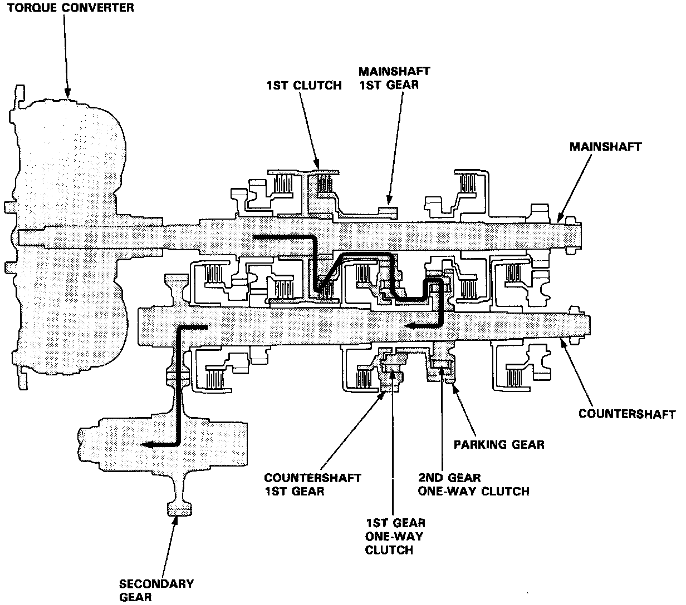
[D4] or [D3] Position, 1st speed
In [D4] or [D3] position, the optimum gear is automatically selected from 1st, 2nd, 3rd and 4th speeds, according to conditions such as the balance between throttle opening (engine load) and vehicle speed.
1. Hydraulic pressure is applied to the 1st clutch, which rotates together with the mainshaft, and the mainshaft 1st gear rotates.
2. Power is transmitted to the countershaft 1st gear, and drives the countershaft via the one-way clutches.
3. Power is transmitted to the secondary drive gear and drives the secondary gear.
NOTE: In [D4] or [D3] position, hydraulic pressure is not applied to the 1st-hold clutch.
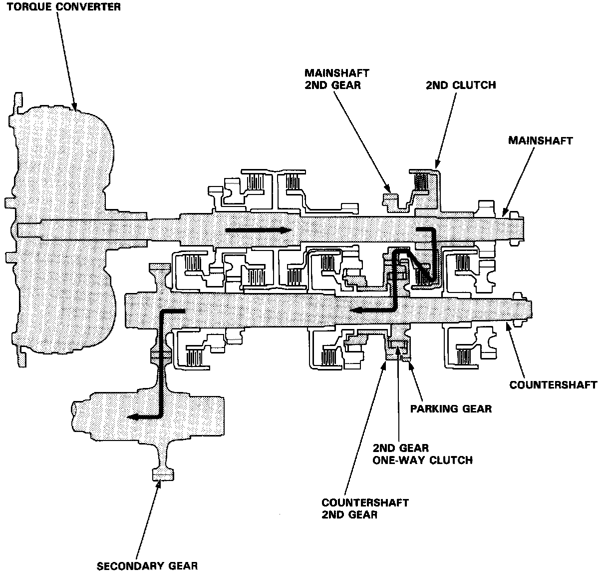
[D4] or [D3] Position, 2nd speed
1. Hydraulic pressure is applied to the 2nd clutch, which rotates together with the mainshaft, and the mainshaft 2nd gear rotates.
2. Power is transmitted to the countershaft 2nd gear, and drives the countershaft via the 2nd gear one-way clutch.
3. Power is transmitted to the secondary drive gear and drives the secondary gear.
NOTE: In [D4] or [D3] position, 2nd speed, hydraulic pressure is also applied to the 1st clutch, but since the rotation speed of 2nd gear exceeds that of 1st gear, power from 1st gear is cut off at the 1st gear one-way clutch.
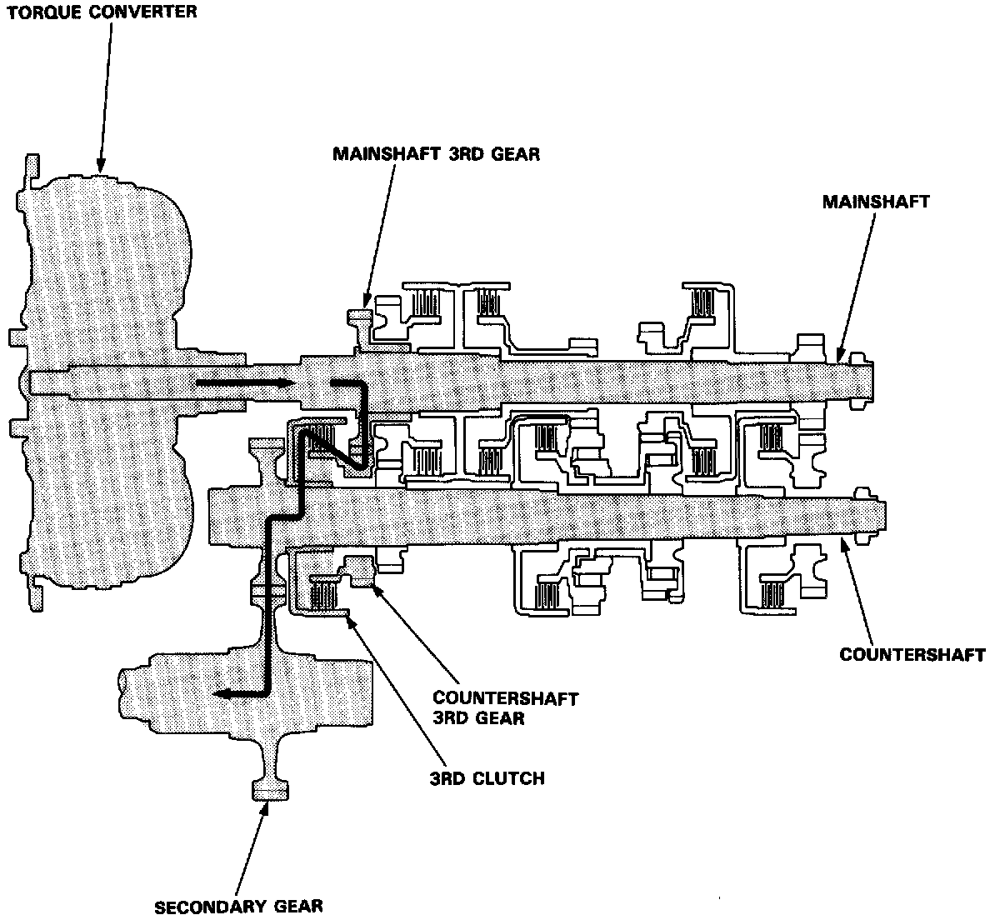
[D4] or [D3] Position, 3rd speed
1. Hydraulic pressure is applied to the 3rd clutch. Power from the mainshaft 3rd gear is transmitted to the countershaft 3rd gear.
2. Power is transmitted to the secondary drive gear and drives the secondary gear.
NOTE: In [D4] or [D3] position, 3rd speed, hydraulic pressure is also applied to the 1st clutch and to the 2nd clutch, but since the rotation speed of 3rd gear exceeds that of 2nd gear, power from 2nd gear is cut off at the 2nd gear one-way clutch.
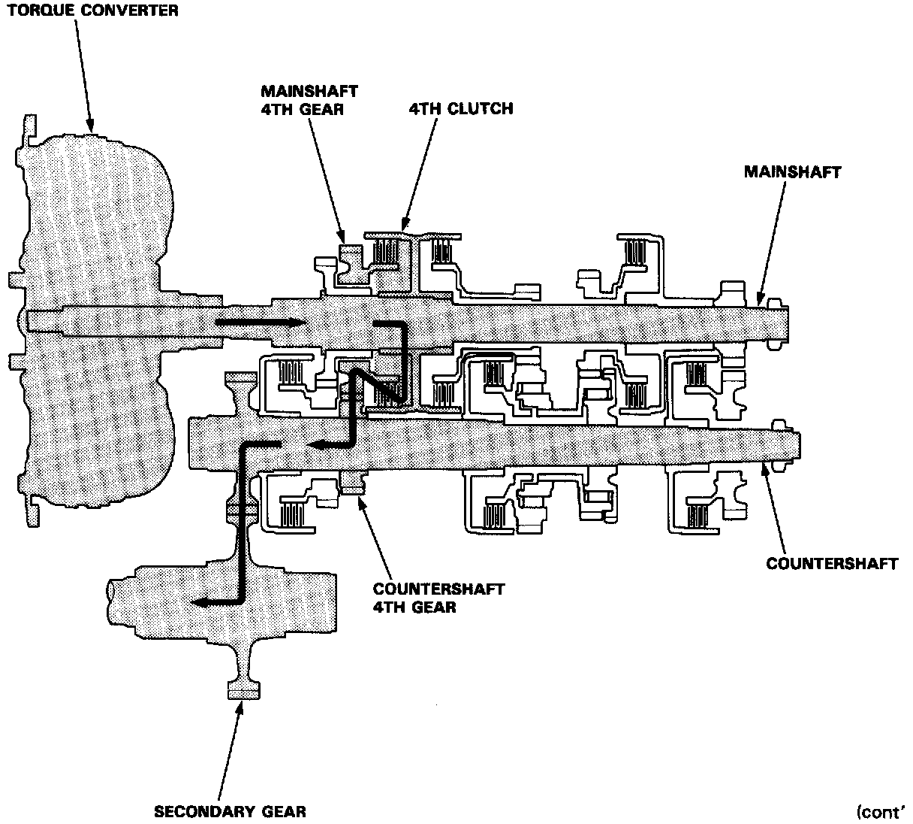
[D4] Position, 4th speed
1. Hydraulic pressure is applied to the 4th clutch, which rotates together with the mainshaft, and the mainshaft 4th gear rotates.
2. Power is transmitted to the countershaft 4th gear, and drives the countershaft.
3. Power is transmitted to the secondary drive gear and drives the secondary gear.
NOTE: In [D4] position, 4th speed, hydraulic pressure is also applied to the 1st clutch and to the 2nd clutch, but since the rotation speed of 4th gear exceeds that of 2nd gear, power from 2nd gear is cut off at the 2nd gear one-way clutch.
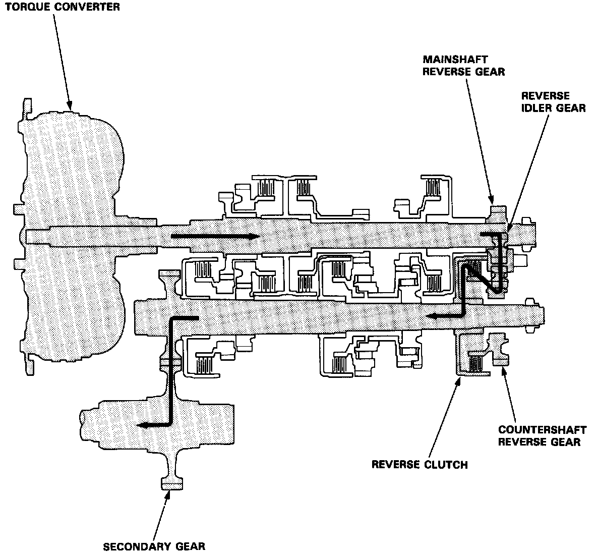
[R] Position
1. Hydraulic pressure is applied to the reverse clutch. Power is transmitted from the mainshaft reverse gear via the reverse idler gear to the countershaft reverse gear.
2. Rotation direction of the countershaft reverse gear is changed via the reverse idler gear in the rear cover.
3. Power is transmitted to the secondary drive gear and drives the secondary gear.